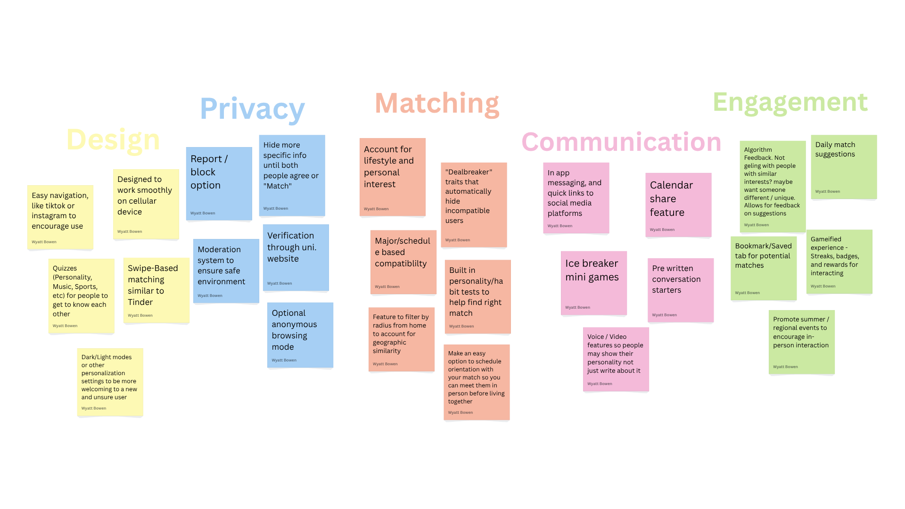
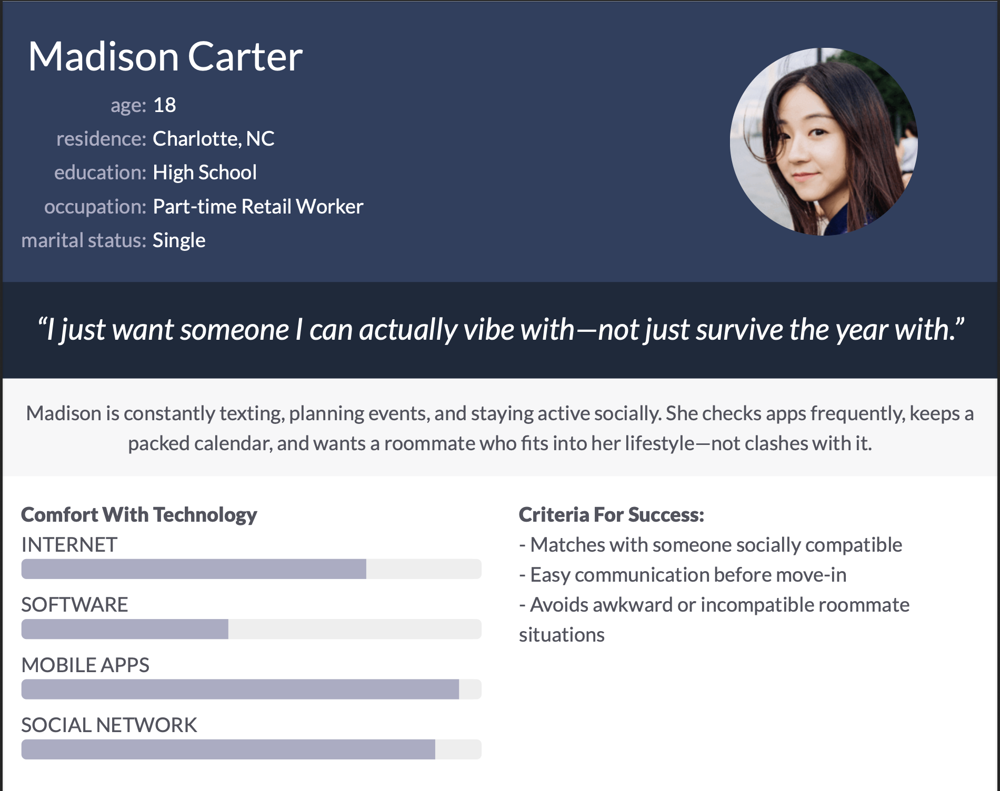

About Me
Hey! I’m Wyatt Bowen, a Computer Engineering student at the University of South Carolina. I am passionate about exploring the intersection of hardware design and software development to build efficient, real-world solutions. My goal is to leverage my technical skills to innovate in the field of embedded systems and high-performance computing.
When I'm not in the lab, I enjoy coding new projects, solving complex problems, and traveling to new places. I'm also a huge sports fan. While I love to support my Gamecocks, my true loyalty lies with The Ohio State Buckeyes!
View My Resume →Technical Expertise
Programming
Python, JavaScript
Systems
Linux/Unix, Raspberry Pi
Hardware
Sensor Integration, Embedded Systems
Concepts
Object-Oriented Programming, Algorithm Design, Mathematical Modeling
CSCE 190 Assignments
Problem Statement

Finding a compatible college roommate is challenging because students often rely on limited or potentially misleading online interactions that don’t accurately reflect real-life personalities.
Affinity Diagram

A collaborative brainstorming map used to organize project ideas and identify potential technical hurdles.
Personas & Storyboards

A combined user research project featuring four distinct freshman college personas and corresponding storyboards that illustrate how each would interact with the app across different needs, goals, and lifestyles.
Get In Touch
I would love to hear from you!